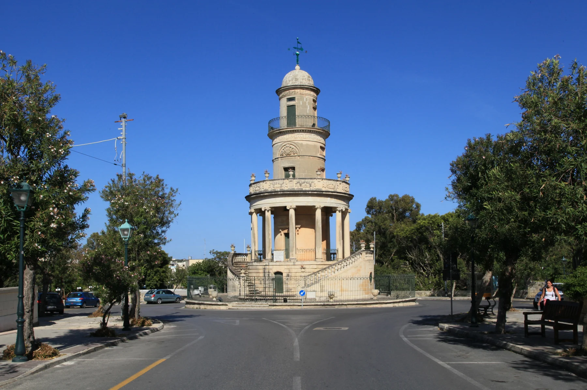

Useful heritage context, not proof that a listing sits by the church or enjoys a quiet, pedestrian-friendly street.

ĦAL LIJA · MALTAOld lanes.
Old lanes.
A landmark avenue.
Ħal Lija's parish core, Vjal it-Trasfigurazzjoni and its outer approaches are different settings inside one locality. The “Three Villages” name connects Lija, Attard and Balzan historically; it does not merge their streets or landmarks.
READ THE LOCALITY IN PARTS
A small village with sharply different edges.
The older lanes establish a civic and heritage centre. The Belvedere anchors the avenue context, while Ħal Mann and Valletta Road form a more mixed outer edge. A locality label cannot tell you which setting surrounds a home.
The landmark is real; a tower view or immediate access is not automatic. Check the building and street directly.
A different approach toward Mosta and Naxxar. Neighbouring retail retains its real address and locality.
LANDMARK, NOT LOCATION PROOF
The Belvedere gives Lija an identity—not every home a view.
The restored tower is a strong self-guided heritage reference. Access, events and the condition of the surrounding public space still need a current council check.
Read the street
Confirm traffic, parking, pavement continuity, entrance access and the evening environment from the actual address.
Check before visiting
A council garden with an outdoor gym and playground was reported in 2024. Verify current access and facilities live.
Keep the neighbours distinct
Attard and Ħal Balzan have their own editions and landmarks.
Mosta remains Mosta
PAMA's operator address is Valletta Road, Mosta. It is not a Lija-core shop or automatically the nearest option.
EVERYDAY ORIENTATION
Start with durable public anchors.
The council, public-health directory and live transport operator provide a responsible first check. Store opening, stock, appointments and departures remain live information.
Ħal Lija Local Council
Use the official council site for current notices, services and public-space information rather than relying on frozen brochure details.
Birkirkara Health Centre
Primary HealthCare currently places Lija in this centre's catchment. Check services, eligibility and opening information live.
Route 54 and stop Lija
These establish an operator corridor only. They do not guarantee frequency, the nearest stop or a property-specific journey time.
Verify the exact street
No durable village-core grocery source was established in this pass. Check current options and the real route from the property.
FOOD, WITHOUT RANKINGS
Neighbourhood formats, checked at source.
These direct operator examples help orient the village. They are not endorsements, “best of” claims or proof of current opening, price, menu or walking distance from a home.
The Pram
The operator identifies a Lija address and neighbourhood format. Check its current menu, opening and booking arrangements directly.
Rani
The operator identifies a Lija venue. Its precise street details differ across the current operator material and MTA register, so this edition deliberately omits the address.
Naranjas
The operator places the venue at St Pio X Band Club in Lija. Confirm today's service and access with the venue.
Open the wider Ħal Lija context only when you need it.
The map frames Lija and surrounding place labels for orientation. It deliberately draws no boundary, route, distance, travel time or listing location and loads from OpenStreetMap only after your click.
Ħal Lija Local Council · Eastern Region · Birkirkara Health Centre · Malta Public Transport Route 54 · Belvedere restoration report · Lija public-garden report · The Pram · Rani · Naranjas · MTA restaurant register. Volatile details require a fresh check.